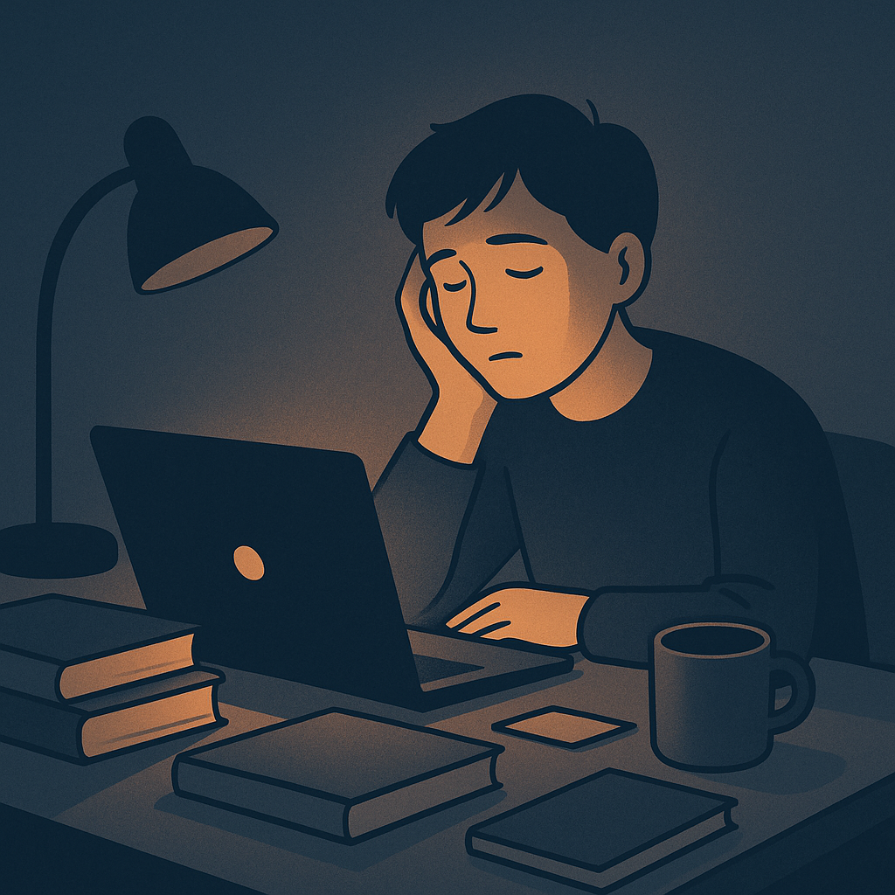
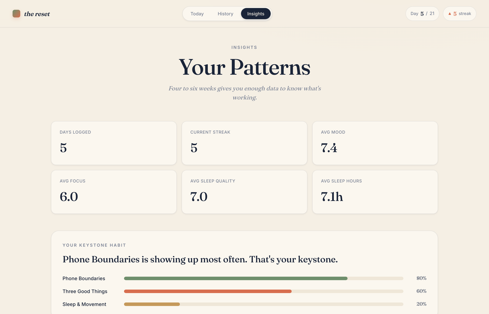
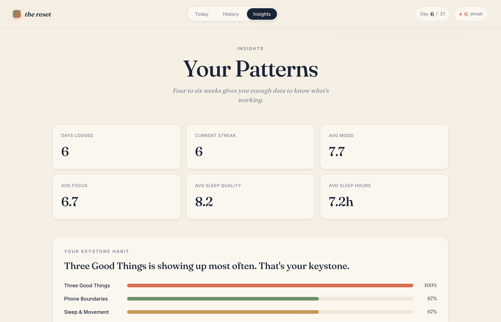
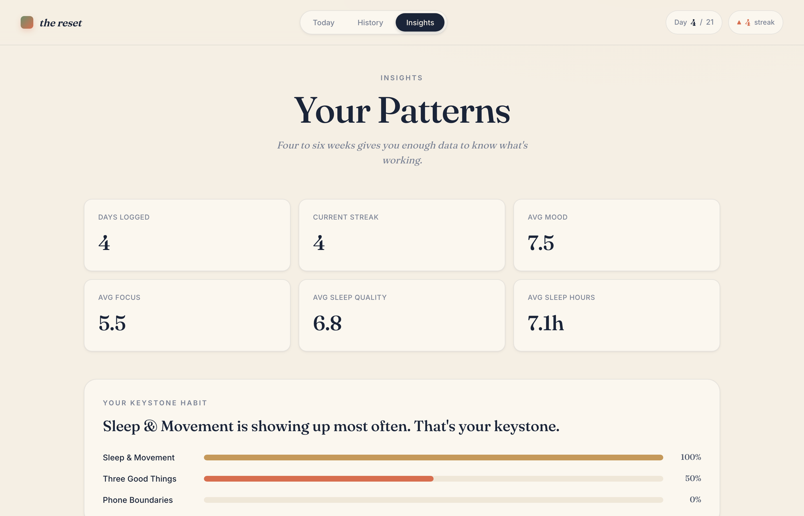
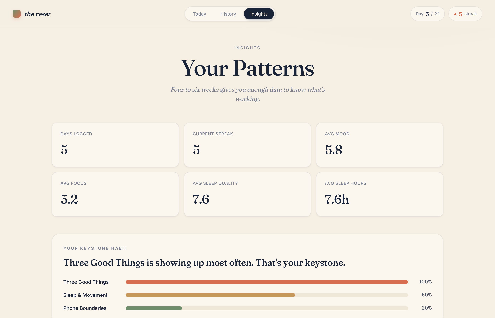
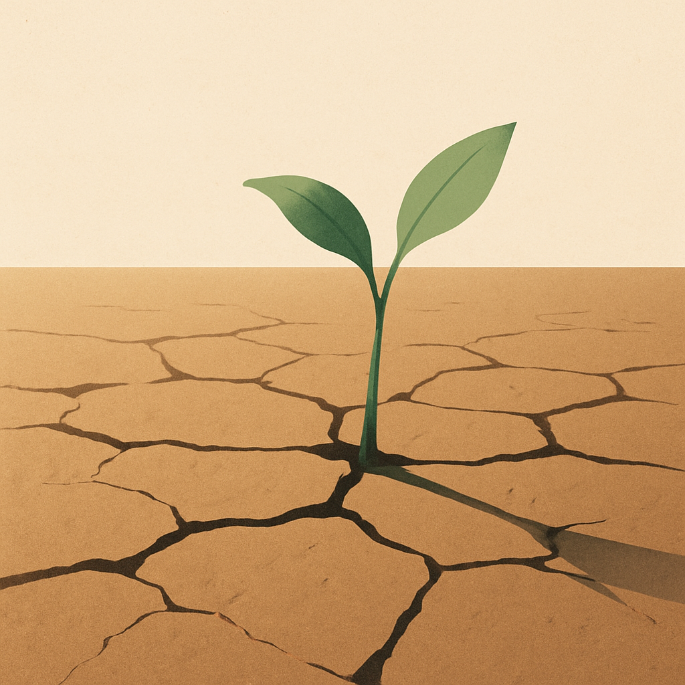

Drawn from course readings, designed for daily use.
Each change is supported by research assigned in this course.
Our group ran the tracker this week. The entries are shown below.




Well-being develops through small habits practiced consistently, rather than through a single decisive change.

We invite you to try it for yourself this week.